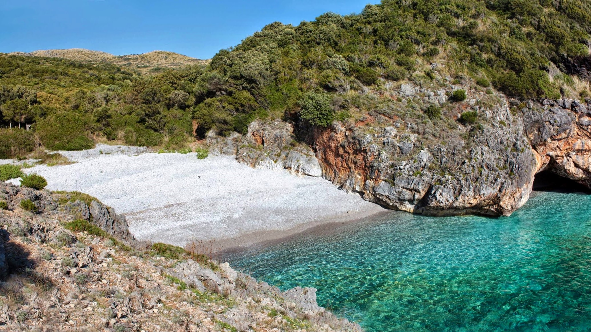
Cala Bianca
Description
The beach owes its name to the white color of the pebbles on the beach. The beach is mostly made up, as mentioned, of small white pebbles, larger inwards, smaller and smaller, becoming almost sand as you get closer to the shore. The sea of Cala Bianca
is crystal clear and very deep and offers a wonderful view for snorkelers.
Read more
Italian Website
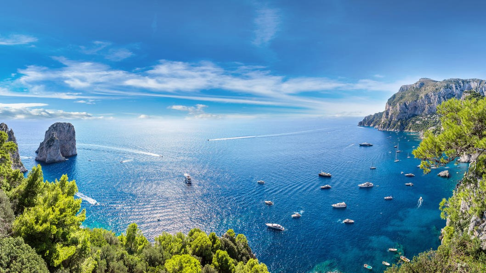
Capri Island
Description
Capri is an island located in the Tyrrhenian Sea off the Sorrento Peninsula, on the south side of the Gulf of Naples. Some of the main features of the island include the Marina Piccola (the little harbour), the Belvedere of Tragara (a high panoramic promenade
lined with villas), the limestone crags called sea stacks that project above the sea (the faraglioni), the town of Anacapri, the Blue Grotto (Grotta Azzurra), the ruins of the Imperial Roman villas.
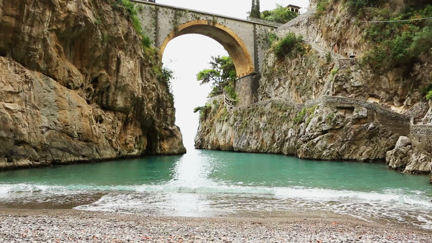
Fjord of Furore
Description
The fjord of Furore is one of the most evocative corners of the Amalfi Coast and consists of a sea recess inside the coast that has invaded a stretch of a deep crack with very steep walls that from the coast wedges inside creating a mixture between an
almost Dolomite landscape and the crystalline waters of the Tyrrhenian Sea.
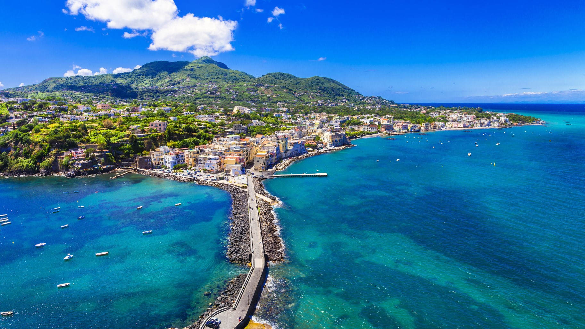
Ischia Island
Description
The volcanic outcrop of Ischia is the most developed and largest of the islands in the Bay of Naples. An early colony of Magna Graecia, first settled in the 8th century BC, Ischia today is famed for its thermal spas, manicured gardens, striking Aragonese
castle and unshowy, straightforward Italian airs – a feature also reflected in its food.
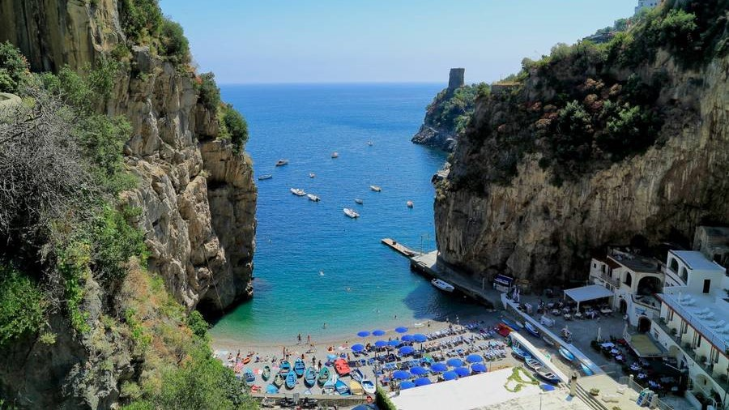
Marina of Praia
Description
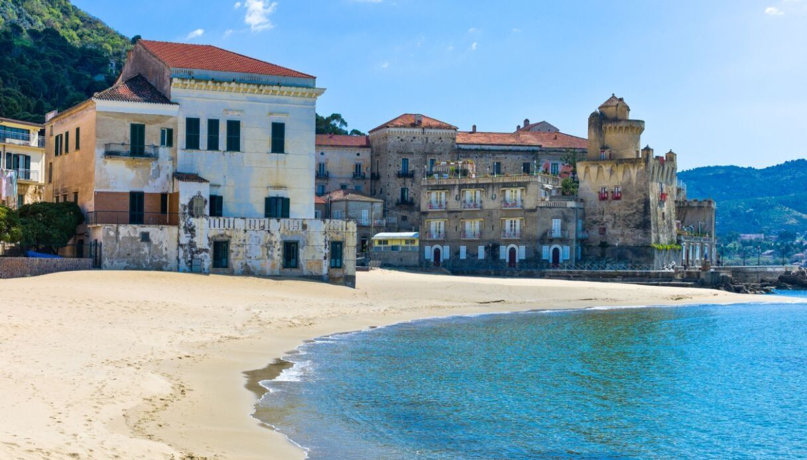
Santa Maria di Castellabate
Description
Santa Maria di Castellabate is an unspoiled seaside delight. It is the ideal destination: rugged hills cascade down to the pristine waters of the Gulf of Salerno; honey-colored beaches are bedecked with colorful umbrellas; a long shop-lined corso provides
an ideal stroll; and the piazza and waterfront offer restaurants, cafes and gelaterias.
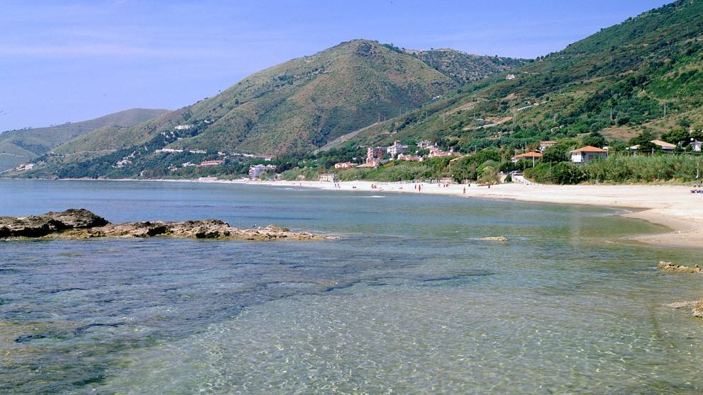
Acciaroli
Description
Acciaroli is a small idyllic village in the province of Salerno, in southern Cilento. It is not only a beautiful area of Campania but it has also been named, as one of the places in the world where people lived the longest. It has a long, gently sloping
beach and the crystal clear water and fine sand make swimming a real pleasure.
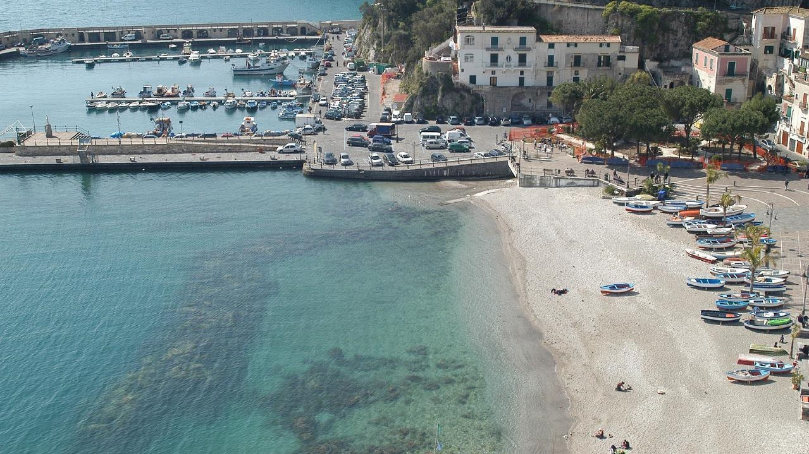
Cetara
Description
Cetara is a cozy fishermen's village nested along the Amalfi Coast among verdant citrus groves. The road that leads along the coast from Vietri sul Mare continues the length of the shoreline, overlooked by rugged hills and rocky seashore, past the fascinating
villages of Raito and Albori, before continuing on almost straight to reach the ancient charming basin of Cetara.
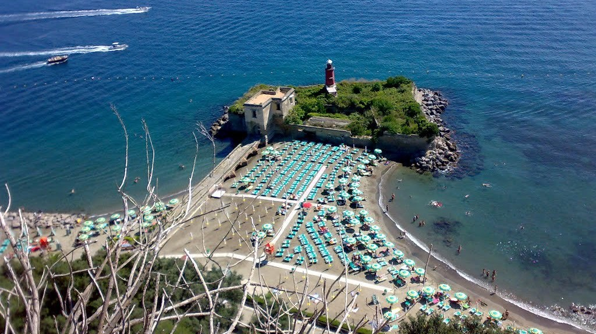
Castel of Baia
Description
The Castello di Baia beach is the ideal place for those who want to spend a real day at sea, away from the noises of everyday life, immersed in the greenery of a grove of holm oaks, surrounded by a clear sea rich in history, protected by that wonderful
monument which is the Castle of Baia.
Read more
Italian Website
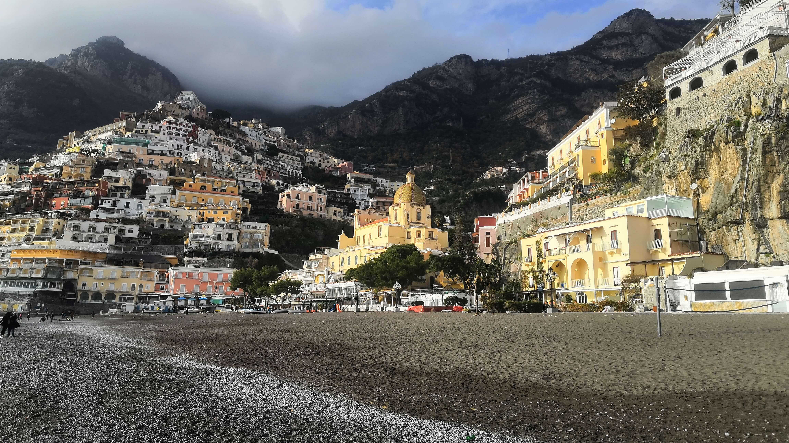
Fornillo's beach
Description
Fornillo is a small pebble stone beach in the heart of Positano paradise at the bottom of the plunging cliff face and sits on the right hand side around from Marina Grande and the main beach in Positano. Only a short 10 minute walk from Marina Grande
around the point along Via Positanesi d’Americana and further along to Via Fornillo, the walk is breathtaking.
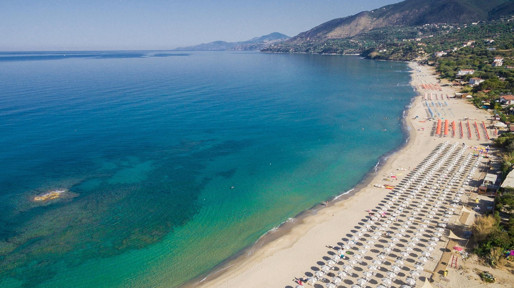
Le Saline Beach
Description
Le Saline Beach is located close to the northern part of Palinuro. It is a beautiful beach of soft golden sand, almost 5 kilometers long, with a strong wild charm and bordered by Mediterranean scrub. The most suggestive and enjoyable stretch of this long
coastline is the one that extends around the Saracen Tower of Caprioli. The sea is very beautiful everywhere, blue, crystalline and transparent, with sandy and sloping bottoms, ideal for swimming and bathing.